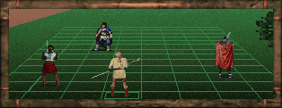
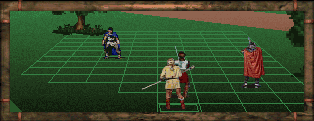

MAP WEB ASSISTANT
MAP WEB ASSISTANT[MAB WEB HOME]
A GUIDE TO THE LESS OBVIOUS ASPECTS OF
THE MIDKEMIAN MAP WEB
MAP WEB ASSISTANT
A GUIDE TO THE LESS OBVIOUS ASPECTS OF
THE MIDKEMIAN MAP WEB
RELIABILITY
The Webmaster has tried to point out all Version differences in the MAP WEB,
but he is very much aware that he may have overlooked some of them. Keeping
track of these is an arduous and complex task.
All Sector Maps are Image Maps. You can click Red Arrows in order to
go to a new Zone. You can click Green Caches in order to view their
contents. You can click Yellow Combat Numbers in order to view a Combat
Page showing a screenshot of the Combat, and the
Enemies' Statistics and Inventories. In some sectors there are
additional differently coloured hot-spots to click, but they should
be intuitively obvious. (If not, you can just scroll down the page in
order to make sure you haven't missed anything.)
The full Combat Code (seen at the top of each separate Combat
Page) contains four elements: The Zone Number, the Combat Number,
the Enemy Numbers, and the Chapter Code. Examples:
1.03.004-005/1-3 Zone 1 - Combat 3 - Enemies 4 and 5 - Chapters 1-3
In order to make sure that the MAP WEB is reliable, the Webmaster
has analyzed and consulted the game's data files (GDFs hereafter). The
"virgin" data can be found in the startup.gam file, or in any SAVE
file created at the very start of the game. The data from these files
has been loaded into a database, which has thereafter been used to generate
and double-check the data. The Webmaster has also subjected his databases
to some rigorous checks, resulting in dozens of (unimportant) corrections,
and is, at this moment (June 1, 1998), confident that the MAP WEB contains
NO IMPORTANT ERRORS. It might, conceivably, contain a few irrelevant errors,
and the Webmaster would be grateful indeed to whoever spots them!
VERSIONS
In the MAP WEB, two versions of the game have been
considered, Version 1.01 (the original diskette version) and Version 1.02
(the CD-ROM version). The free download is basically identical to Version
1.02, but contains at least one serious bug. (A patch is available from the
Sierra website.)
The Midkemian Game World is divided into Zones. There are 9 Surface
Zones (1-9) and 3 Underground Zones (A-C). It should be noted that this
division derives from the GDFs - it is not the Webmaster's invention. The
Zones and their divisions should be apparent to anyone studying the MAP
WEB's pilot page.
MAP WEB STRUCTURE
Clicking a Zone will open a Zone Map. Most Zone Maps are composed
of many Sectors. Clicking a Sector will open a Sector Page showing
a detailed Sector Map.
I have plans to link the MAP WEB
to the SHOP WEB, but this won't happen just yet. I also plan to create INN Pages,
but I have no idea when I will find the time.
To give you an idea of the size of the MAP WEB, there are 73 Sector Pages,
and 435 Combat Pages, listing details of 1600 Enemies.
Each Sector Page is divided into four parts. The Sector Image Map is shown
at the top of the page. The Cache lists follow, and below them you will
find notes on various other things: NPCs, Traps, Sub-quests, etc. Finally,
at the bottom of the page a concise Combat or Enemy Table will be found. This
sets out, in abbreviated format, all the Enemy statistics and inventories. For
a less concise format, click the Combat Number in the table (or in the Sector
Image Map).
NUMBERING OF COMBATS and ENEMIES
For each Zone the Combats and Enemies have been number-coded
for easier reference. Each Combat and Enemy Number is only
valid within one specific Zone. The numbers are seemingly
arbitrary, but they are actually based on data from the GDFs.
2.03.006-008/1-3 Zone 2 - Combat 3 - Enemies 6, 7 and 8 - Chapters 1-3.
ENDLESS COMBATS
There is a certain type of Combat, which can only be termed "endless".
A good example is the Army of Rogues surrounding the Prelate's House near the
Temple of Kahooli. You can fight them and kill them, but you won't be
able to search their bodies. They will immediately return, and unless you
want to go on fighting them, you will have to back out.
In the Combat Grid the placement of a "resurrected" Enemy will always be the coordinate where he fell when you last killed him.
The interesting thing about these Combats is they are good opportunities for raising you Combat Skills. The Enemies involved will progressively weaken. They will keep their original Health, but their Stamina will be ZERO after you've killed them once. The condition of their Weapons and Armor at the end of one Combat will carry over to the next, so if you are patient enough to fight repeatedly, you will soon be fighting extremely weak Enemies.
There are various, and devious, tricks possible in this situation.
Example 1: If an Enemy has grown too weak to do you any Damage, don't
kill him. Just allow him to whack at you forever, and your Defense Skill will
rise.
Example 2: When all but one Enemy have been killed, freeze the remaining
one (not necessary if he's a wimp). Rest during the rest of your Turns, thus
regaining all lost Health/Stamina Points. Then kill the bugger.
There are two "endless" Combats which differ - the two groups of Tax Collectors
West and East of Lyton. These Enemies will not return immediately, but they will - 34
hours later - and they won't weaken at all.
CHAPTER CODE
This is clearly indicated in the Combat Code. The last part
of this shows the Chapter Code (see examples above). The first
number indicates the first Chapter where a Combat may be encountered,
the second number the last Chapter. Thus:
1-1 means "Chapter 1 only".
This problem is especially apparent in the regions around Sar-Sargoth,
where I've sometimes felt it necessary to show two placements for the
same Combat.
Combats are also Chapter-related. Some Combats are only
there in one Chapter. Others will be available in more
than one Chapters. A Combat fought, and finished, will of
course never be available again - but many Combats can be
avoided in one Chapter, and faced again in a later one.
1-3 means "Available in Chapters 1, 2 or 3.
I've tried to place the Combat Numbers as exactly as I can,
but please be aware that this is practically impossible in many
cases. The final placement will depend upon the direction from which
the Combat is approached (and other factors), so don't be irritated
if my placements are slightly off! (They will be close enough, though,
for all practical purposes.)
Presenting this data in an economic manner in the concise Combat/Enemy
Tables (in the Sector Pages) was extremely difficult. There is a lot of data to be shown
for each enemy, and somehow this had to be presented so as to fit
the width of a computer screen. (For this reason it is not recommended
that you change the default font of your browser when viewing these - if you
increase the font size, most of the tables run off the screen.)
This data may look incomprehensible to you in the concise Combat Tables, but as soon as you get the hang of them, I think you'll agree that they are quite successful in presenting a lot of data in a narrow space.
The structure of these tables is best explained by using an example. Here's an example Combat:
| Combat # 14 ( N of Yabon ) |
Zone
1
|
|||||||||||
| MF | 030 | 0209 | 06 | 38 | 28 | 06 | 17 | 41 | 35 | 54 | 00 | SKA51 BSW76 RSS04 |
| MF | 031 | 0506 | 05 | 42 | 35 | 04 | 14 | 42 | 34 | 00 | 00 | SKA79 BSW78 |
The header should be obvious: This is Zone 1, Combat #14, North of Yabon. There are two Enemies (#030 and #031). This Combat is first accessible in Chapter 1, and if you don't finish it there, it will be available in Chapter 2 and Chapter 3 as well.
Now let's look at the individual Enemy info:
| Combat # 14 ( N of Yabon ) |
Zone
1
|
|||||||||||
| MF | 030 | 0209 | 06 | 38 | 28 | 06 | 17 | 41 | 35 | 54 | 00 | SKA51 BSW76 RSS04 |
MF - This is the Enemy Code. MF stands for Moredhel Fighter. The Enemy Codes will be treated separately below.
0209 - This refers to the COMBAT GRID. The Combat Grid will be treated in detail below. This number means that the Enemy's coordinates in the Combat Grid are 2,9.
06 - This is the RETREAT Factor. All I know is that an Enemy Retreat Factor of 00 means that the Enemy will NEVER RETREAT. As the number gets higher, he will be more likely to flee.
38 28 - This is the Health and Stamina of the Enemy. Add these two numbers in order to get the Damage needed to kill.
06 - This is the SPEED of the Enemy.
17 - This is the STRENGTH of the Enemy.
41 35 - This is the Melee Skill and Defense Skill of the Enemy.
54 - This is the Crossbow Skill. Why does this Enemy have such a skill? He doesn't even hold a Crossbow! More on this later. The Crossbow Skill would be color-coded as YELLOW, if the Enemy were holding a Crossbow and Quarrels. In such a case he would be a Moredhel Archer, and the Enemy Code would be MA.
00 - This is the Spellcasting Skill. This will always be color-coded YELLOW, if the Enemy is a Spellcaster.
SKA51 BSW76 RSS04 - This is the Enemy's Inventory. We've seen that the Enemy Codes are two-letter abbreviations. Item Codes are three-letter abbreviations (shown in full below). In this specific case:
SKA51 - Standard Kingdom Armor 51%
BSW76 - Broadsword 76%
RSS04 - Rations (Spoiled) 4
Note: Any abnormalities of Skills will be shown in BLUE. Here's an example:
| RM | 028 | 0405 | 00 | 00 | 00 | 00 | 00 | 00 | 00 | 00 | 00 | SKA96 BSW80 RUB40 FLAM+GRIE+SKIN+STRE |
This Enemy (a Rogue Mage) is practically DEAD. All his skills are Zero. He won't be able to use his Sword, and all his Spells are useless.
You will notice that he's holding a Broadsword and Standard Kingdom Armor. You should easily be able to guess what RUB40 means. Note the yellow four-letter abbreviations at the end. These are Spells, and it should be pretty transparent which Spells they are:
FLAMECAST, GRIEF OF 1000 NIGHTS, SKIN OF THE DRAGON, and STRENGTH DRAIN.
COMBAT PAGES
The few abbreviations used here should be obvious: HEAlth,
STAmina, SPEed,
STRength, MELee,
DEFense, CROssbow
and CASting speak for themselves.
DAMage is Health+Stamina, i.e. the Damage needed to kill.
RTR is the Retreat Factor. Skills shown in Grey
are non-existent or irrelevant.
Deciding how to order the Enemy Data (especially when there are more than three
of them) has often been very difficult. There are two basic rules I've tried to
stick to:
1. The Data Tables should imitate the positions of the Enemies as closely
as possible.
2. If the Enemies need to be presented in two or more rows, the most dangerous
ones are placed in the top row. For this reason Spellcasters and Archers
will often be found in the top row, while Fighters will be placed below.
As earlier noted, the concise Combat Tables are there for quick reference. For
more detail you can click the Combat Number, and open the relevant Combat Page.
This will show a screenshot of the Combat, and the Enemy Statistics and Inventories
in an easier-to-read format.
Here I've needed to differentiate. Moredhel Warriors, Rogues,
Quegian Pirates, Goblins, Nighthawks and Black Slayers can be either
Fighters or Archers. The two-letter codes used to differentiate are:
MF - Moredhel Fighter
MA - Moredhel Archer
QP - Quegian (Pirate) Fighter
QA - Quegian (Pirate) Archer
RG - Rogue Fighter
RA - Rogue Archer
GF - Goblin Fighter
GA - Goblin Archer
NH - Nighthawk Fighter
NA - Nighthawk Archer
BS - Black (Slayer) Fighter
BA - Black (Slayer) Archer
A small problem: Lots of enemies have Crossbow Skill, even if they
don't have a Crossbow! Some enemies have a Crossbow, but suffer from
a ZERO Crossbow Skill (meaning they can't use the Crossbow)! To simplify
matters I have defined an Archer as an Enemy with a Crossbow in his
inventory. Perhaps I should have classified Crossbow-Holders with ZERO
Skill as Fighters, but let's not be too pedantic. These are very few.
NOTE: Some Enemies' Crossbow Skills are used to determine a different
type of attack. A Troll's Crossbow Skill determines his ability to throw
Rocks at you. A Wyvern's Crossbow Skill determines a special type of
attack, which is a mystery to me.
SPELLCASTERS vs. MAGICAL ATTACKERS
On the other hand we have Spellcasters, like Moredhel Spellcasters, Tsurani
Spellweavers, Pantathians, Rogue Mages and Highland Ogres. These Enemies'
Spells are clearly defined, listed in their Inventories, and known by name.
There's a line to be drawn here. Some Enemies seemingly cast Spells,
and have a Casting Skill, but don't have any Spells listed in their
inventories. Among these are Wind Elementals, Wyverns, Dreads and Shades
- and the "Spells" they cast are obviously not any of the Spells known
to us by name. These Enemies are the Magical Attackers. Their "Spells"
seem to be inherent to them, and each group has the same Spell(s). As an
example, all Wind Elementals have one "Spell". It looks like WINDS OF EORTIS,
but obviously isn't. Details on this are not obviously available from the GDFs.
These have already been mentioned. Although a somewhat complicated matter, the
basics are easy to understand:
At the start of a combat you can see the Combat Grid by punching the [G]-key on your keyboard.
The Combat Grid is basically a coordinate system. A regular Combat Grid (above ground) will measure 8 (x-axis) by 13 (y-axis) squares. Here's a typical one:

On the x-axis the 8 squares will be indicated by the
numbers 0 - 7. On the y-axis they will be indicated by
the numbers 0 - C. Those of you who are familiar with
hexadecimals won't be puzzled by this, but for the less
enlightened it should be enough to state that 1-9 equals
1-9, A equals 10, B equals 11 and C equals 12.
Now take a look at the grid.
Now it should be obvious that the Moredhel Warrior is
occupying square 2,6, Locklear 1,1, Owyn 3,0, Gorath 6,2.
The extreme corners
are defined as:
Near left: 0,0 (this can never be occupied)
Near right: 7,0 (neither can this)
Far left: 0,C
Far right: 7,C
Sounds simple, doesn't it? I'm afraid I'll have to disappoint you. Combat Grids can easily get modified, if you approach the combat from a vantage point which doesn't allow the whole 8 by 13 (or 8 by 7) grid enough space. It can wildly diverge from the above, if you happen to approach the Combat in a very narrow space. For a not-so-wild example, see the below. This is exactly the same combat as above, but we have appraoched from a different direction, close to a mountain side:

Note how some squares become inaccessible. These are:
0,3
Any Character or Enemy occupying these squares in the Regular
Combat Grid will, of course, have to be moved. In this case
Locklear moves (to the right) along the x-axis to the FIRST POSSIBLE occupiable
square. This is a very simple case - there are some extremely
narrow places in the game where the REGULAR GRID becomes almost
unrecognizable!
0,2 1,2 2,2
0,1 1,1 2,1 3,1
0,0 1,0 2,0 3,0
ABBREVIATIONS
There are THREE types of abbreviations - two-letter for Enemies,
three-letter for Items, four-letter for Spells. Please
consult any/all of the below:
ENEMIES (an alphabetical index of Enemy abbreviations)
Let's use a 77% Sword of Kinnur to demonstrate this:
KIN77 - Bless #1
KIN77 - Frosted
KIN77- Clerical Enhancement #1
From the above it should be easy to work out the possible combinations. Here are
a few examples:
KIN77- Bless #1 and Poisoned
If you find this too confusing to contemplate, just click the Combat Number. This
will open the Combat Page, where the Enhancements are easily comprehensible.
There's one more example of color-coding I've used in the Inventories. This
is quite rare, but you can see it, for example, in Nago's Inventory: NOT30.
The Dark Grey Color indicates that
this is a VERSION-DEPENDENT ITEM. The item in question is here
in version 1.02, but not at all in version 1.01. (This won't happen
often, I promise.)
TEMPLES
Take a good look at the above example, which sets out the format of Temple
information in the MAP WEB. Since I still haven't set up any Temple Pages,
I think some explanations are needed here.
BLESS PRICE. In the above case there's a BASIC FEE (25.0)
and an additional percentage (75%) of the Item's Basic Price.
(Basic Prices can be found in the Shop Pages.)
Example: Basic Price of Sword of Lims-Kragma is 1000.
Having this blessed here will cost 25+(1000*0.75)=775. The BASIC
FEE and PERCENTAGE will vary between Temples.
BASIC CURING FACTOR. This varies between Temples as well. Here it is 65.
The cost of a cure depends on this factor (BCF), and the Condition
Type Factor (CTF), and the severity of the Condition (CON).
The CTF is as follows:
3.0 if Near-Death
CON is expressed as 0.xx (40% Condition equals 0.40).
The formula for computing the cost is:
(BCF*CTF*CON)+(BCF*0.01) - result will be truncated to the nearest Royal.
Examples (using Temple of Killian):
NEAR-DEATH 40% = (65 * 3 * 0.40) + (65 * 0.01) = 78.65 = 78.6
In the Combat Data Tables I've (obviously) needed to employ
various abbreviations. If you're well familiar with BAK and the
BAK Help Web, these will mostly be obvious to you. But in case
you're not, I've included complete indexes.
ENEMIES PLUS! (a graphic table of Enemy data)
ITEMS (an alphabetical index of Item abbreviations
ITEM CLASSES (a classified list of Item abbreviations)
SPELLS
In the concise Combat Tables I've needed to color-code Modified Swords
and Armor. You may object to the colors used, but please remember
that some browsers allow only a limited palette. I'm trying to
please all.
KIN77 - Bless #2
KIN77 - Bless #3
KIN77 - Poisoned
KIN77 - Steelfired
KIN77 - Flamed
KIN77- Clerical Enhancement #2
KIN77- Bless #2 and Clerical Enhancement #2
KIN77- Bless #3 and Steelfired
 TEMPLE OF KILLIAN
TEMPLE OF KILLIAN
Bless Type #1 - Price: 25 + 75% of Basic Price
 Basic Curing Factor = 65
Basic Curing Factor = 65
 Teleport = YES
Teleport = YES
1.0 if Plagued
1.0 if Poisoned
0.4 if Sick
0.3 if Drunk
0.2 if Starving
PLAGUED 47% = (65 * 1 * 0.47) + (65 * 0.01) = 31.2
POISONED 54% = (65 * 1 * 0.54) + (65 * 0.01) = 35.75 = 35.7 [TOP OF PAGE]
[TOP OF PAGE]